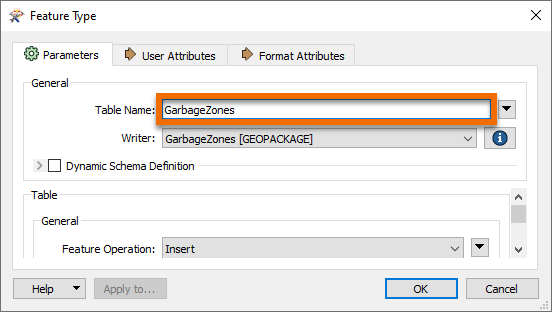

After completing this unit, you’ll be able to:
Here we continue with a project to redefine garbage collection schedules.
In the first exercise, we used various transformers to divide addresses into five separate groups. Now the task is to refine that work by estimating the number of residents per address based on the zone type it falls within:
1) Open Workspace
Open your workspace from the previous exercise.
Save a copy of the workspace with a new date or version number. For example, if you saved the previous workspace as GarbageCollection-05-18-2022.fmw, then make a copy named GarbageCollection-05-19-2022.fmw and open that for editing.
Alternatively, you can open the starting workspace.
The remaining transformers in the "Transformers" bookmark are these:

2) Add Reader
The first task here is to identify which planning zone each address falls inside. We need to read the zoning data and carry out a spatial join. To read a new dataset of data in a different format requires a new reader.
So, select Readers > Add Reader from the menu bar. When prompted enter the following parameters:
| Reader Format | MapInfo TAB (MITAB) |
| Reader Dataset | https://s3.amazonaws.com/FMEData/FMEData2022/Data/Zoning.zip |

A reader is added to the Navigator window and a feature type to the canvas. Move the feature type into the Zoning bookmark:

3) Create Spatial Join
To carry out a spatial join we'll use a PointOnAreaOverlayer transformer; this is a type of join called Point-in-Polygon.
So, move the PointOnAreaOverlayer transformer from the "Transformers" bookmark to the "Spatial Join" bookmark. Connect the newly added Zoning data to the Area port and the output from the Sampler to the Point port:

Inspect the PointOnAreaOverlayer parameters. Expand the Attribute Accumulation section and check Merge Attributes:

This transformer is the first we've used that has a live <Rejected> port. For now, we'll leave it to stop the translation, since during testing we want to know about anything that causes a failure of the transformer.
Run the translation, ignore the Invalid Transformer Parameters dialog that pops up and click Run. This dialog pops up because we have previously run the translation to the Aggregator, but now we have broken that connection. We will fix it shortly.
Click on the PointOnAreaOverlayer:Point output port to view the data in the Visual Preview window. View both the Graphics and Table view. The overlay and attribute merging should cause each address to be given a zone name and category, click on any of the zones to confirm this.
4) Calculate Residents
The next step is to set how many residents live at a certain address according to its zoning type.
We know that:
| Zone Begins With | Zone Type | Residents |
|---|---|---|
| RS | Single Family | 2 |
| RT | Two Family | 4 |
| RM | Multiple Family | 12 |
| CD | Comprehensive | 8 |
| C | Commercial | 1 |
For example, zones RS-1, RS-2, RS-3 are all single-family zones, and we assume a total of two adults per address. This assumption makes it slightly more complicated because we need to match a zone type using a "begins with" string comparison.
This match can be done using an AttributeManager with Conditional Values.
This step is slightly complex, but luckily the AttributeManager inside the "Transformers" bookmark is already set up for this purpose. So move the AttributeManager into the "Calculate Residents" bookmark and connect it to the PointOnAreaOverlayer:Point output port:

If you are interested in what Conditional Values look like, open the parameters dialog for the AttributeManager and click the drop-down arrow in the Attribute Value field for the Persons attribute. Choose Conditional Value:

Doing so opens a Tester-like dialog with multiple conditions that test for each zone type, and an attribute value to set them to:

5) Create Residents
We now know (or have approximated) the number of residents per address. However, we must use that number in a way that will affect the output. The simplest way to do this is to create multiple copies of each address, one for each resident.
For example, for an address with eight residents, we'll create eight address points.
We can do this very simply with a Cloner transformer. So, move the Cloner transformer from the "Transformers" bookmark to the "Calculate Residents" bookmark. Connect the AttributeManager to the Cloner's input and its output to the StatisticsCalculator:

Inspect the Cloner parameters. For the Number of Copies parameter, click the drop-down arrow and choose Attribute Value > Persons:

Doing so will create <Persons> copies of the original addresses (note that the transformer doesn't output the original as well, so the output is <Persons> features, not <Persons>+1).
6) Run Translation
Make sure an Inspector is still attached to the Aggregator transformer and run the translation. The translation will fail with the error message:
Cloner_<Rejected>: Termination Message: 'Cloner output a <Rejected> feature.'
The translation failed because addresses without a resident (for example, Industrial) have no Persons attribute and are being rejected by the Cloner transformer. The <Rejected> port is still set up to stop the translation, and so we get this error.
There are various choices to handle this. We could:
Setting the Conditional Values would be the best solution to deal with the problem directly. But there might be other causes for rejected data, and we want to deal with that without having the translation stopped.
Setting the Rejected Feature Handling parameter means all <Rejected> ports would ignore rejected output. This setting might be useful in a production workspace, but in testing, we would probably want to stop the translation so that we can be aware of issues immediately.
So for us, the better solution is to add a transformer to the Cloner <Rejected> port. We don't need to inspect or log these features because we know that they will exist. So, connect the <Rejected> port to a small transformer called a Junction:

This Junction will handle the rejected output, but quietly drop it without further fuss.
Re-run the translation. The output should be five groups of point features again, but in a different pattern to the end of the previous exercise:

7) Write the Output
Now to write some output. The simplest method is to connect the Aggregator output to the PostalAddress output feature type and re-run the workspace.
However, it would also be useful to rename the output feature type and remove all of its attributes, since they are from the reader dataset and don't apply here. So open the writer feature type parameters dialog. In the Parameters tab rename the feature type to GarbageZones.

In the User Attributes tab, remove all of the attributes that are being written.

Your writer feature type should look something like this:

Also, we should change the GeoPackage writer parameter Overwrite Database to overwrite the database each time we run the workspace. To do this, find the GarbageZones [GEOPACKAGE] writer in the Navigator, expand the Parameters, double-click Overwrite Database, and then check the box and click Ok:

Enabling this parameter means we won't accumulate more and more results in the same dataset.
Congratulations. Now you have a dataset of addresses grouped by their new garbage collection zone. In the next exercise, we will turn these points into non-overlapping polygons designating the zones.